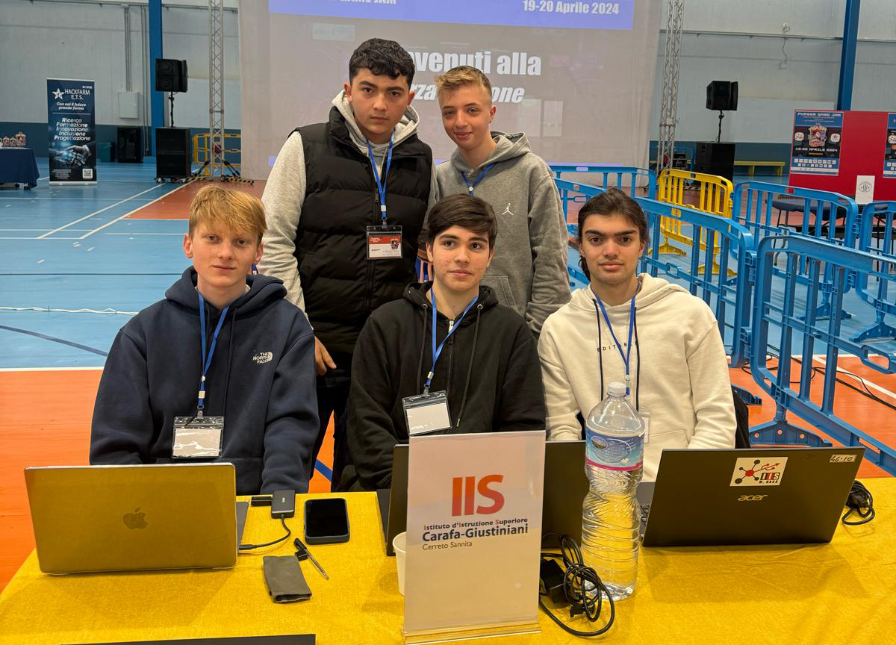

Siamo cinque studenti del terzo anno dell'ISS Carafa Giustiniani di Cerreto Sannita. Appassionati di tecnologia e design, abbiamo unito le nostre forze per fondare 'Turing Coder', un gioco creato con TypeScript e Phaser. Attraverso questo progetto, esploriamo il mondo della programmazione e del design grafico, mettendo in pratica quanto apprendiamo a scuola e divertendoci nel processo.
I nostri programmatori e grafici:
Pietro (Programmatore)
Sebastiano (Programmatore)
Raffaele (Grafico/Programmatore)
Alessandro (Programmatore/Copywriter)
Paolo (Grafico)